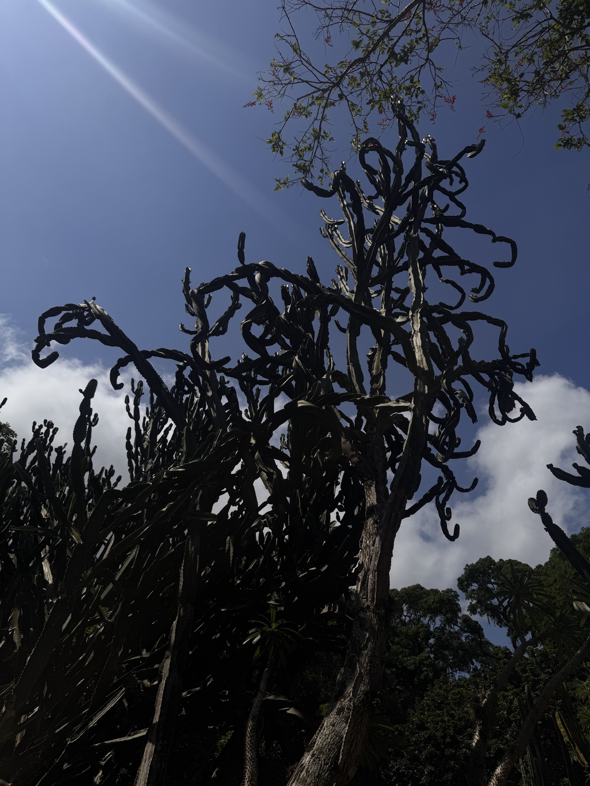

Welcome
I grew up in the Eastern portion of the United States, after which I spent a year living abroad between Brazil, Albania, and Colombia. Living in different countries allowed me to experience various cultures, customs and lifestyles. I think this experience has helped me be a more adaptable and empathetic person. Also, I am now fluent in Spanish, and intermediate in Portuguese, in addition to my native English. When I'm not studying or creating something you will usually find me with an iced coffee in hand somewhere in nature. Currently I am finishing a degree in information technology and working towards my career in web design. This site is where I'm able to bring my career and personal goals together.
